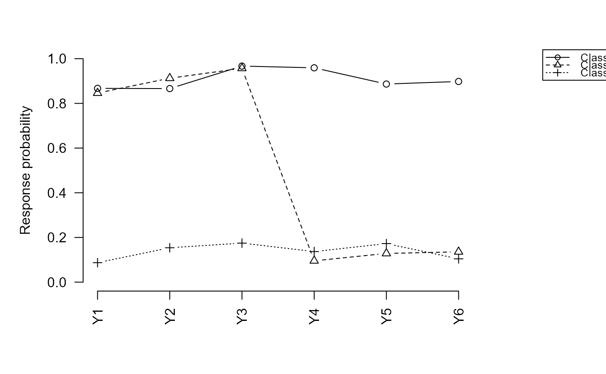

R/three_step.R
three_step.RdThree-step LCA estimation with covariates and/or distal outcomes
three_step(
data,
Y.names,
n_classes,
Zp.names = NULL,
Zo.name = NULL,
step1 = NULL,
use.two.step = TRUE,
use.modal.assignment = TRUE,
include.intercept = TRUE,
use.simple.cov = FALSE,
incomplete = FALSE,
boundary.tol = 0.01,
maxIter.measurement = 5000,
measurement.tol = 1e-08,
covariate.tol = 1e-06,
iter.measurement = 10L,
R2.threshold = 0.7,
use.bch = FALSE,
em.maxIter = 200L,
get.twostep.vcov = FALSE,
rebase = "C1",
family = "gaussian",
correct.spec = FALSE,
verbose = FALSE
)A data.frame.
Character vector of indicator column names.
Integer. Number of latent classes.
Character vector of covariate column names, or NULL.
Single character name of the distal outcome column, or NULL.
Pre-fitted Step-1 object (output of lca_step1()), or NULL.
Logical. Use two-step starting values for Step 3.
Logical. Use modal (hard) class assignment.
Logical. Include intercept in covariate model.
Logical. Skip measurement-uncertainty correction.
Logical. FIML for missing indicators.
Boundary tolerance for phi parameters.
Maximum EM iterations for Step 1.
Convergence tolerance for Step 1.
Convergence tolerance for Step 3.
Random restarts when entropy R\(^2\) is low.
Entropy R\(^2\) restart threshold.
Logical. Use BCH weights instead of ML.
Maximum EM iterations for Step 3.
Logical. If TRUE, call
fitZ_from_multiLCA() to obtain multilevLCA's corrected standard errors
for the two-step gamma estimates and store them in $two_step_vcov.
Requires multilevLCA. Default FALSE.
Character (e.g. "C1", "C2") or integer specifying which
latent class to use as the reference category in the multinomial logit
for Steps 2 and 3. The measurement model is permuted so this class
becomes column 1 before any structural estimation. Default "C1".
One of "gaussian" (default), "poisson", "binomial".
Logical. Use model-robust (outer-product) Hessian.
Logical. Print progress messages.
A list containing $measurement_model, $covariate (if
Zp.names supplied), and/or $distal (if Zo.name supplied).
Bakk, Z., Tekle, F. B., & Vermunt, J. K. (2013). Estimating the association between latent class membership and external variables using bias-adjusted three-step approaches. Sociological Methodology, 43(1), 272–311. doi:10.1177/0081175012470644
Bakk, Z., & Kuha, J. (2018). Two-step estimation of models between latent classes and external variables. Psychometrika, 83(4), 871–892. doi:10.1007/s11336-017-9592-7
Bakk, Z., Pohle, M. J., & Kuha, J. (2025). Bias-adjusted three-step estimation of structural models for latent classes. Multivariate Behavioral Research. doi:10.1080/00273171.2025.2473935
d <- generate_data(n = 200, separation = "high",
scenario = "covariate", seed = 1)
# Measurement model only
fit_m <- three_step(d, Y.names = paste0("Y", 1:6), n_classes = 3)
summary(fit_m)
#> -- tseLCA Measurement Model --------------------------------
#> Latent classes : 3
#> Log-likelihood : -599.3319
#> AIC : 1238.6639
#> BIC : 1304.6302
#> Entropy R² : 0.8635
#>
#> Class prevalences:
#>
#> P(C1) 0.3202
#> P(C2) 0.3664
#> P(C3) 0.3134
#> attr(,"names")
#> [1] "C1" "C2" "C3"
#>
#> Item-response probabilities (P(Y=1|class)):
#> C1 C2 C3
#> P(Y1|C) 0.8672 0.8462 0.0871
#> P(Y2|C) 0.8663 0.9126 0.1540
#> P(Y3|C) 0.9669 0.9570 0.1746
#> P(Y4|C) 0.9591 0.0955 0.1368
#> P(Y5|C) 0.8865 0.1284 0.1725
#> P(Y6|C) 0.8980 0.1358 0.1043
# ML three-step with simple SEs (fast)
fit <- three_step(d, Y.names = paste0("Y", 1:6), n_classes = 3,
Zp.names = "Zp", use.simple.cov = TRUE)
summary(fit)
#> -- tseLCA Three-Step Covariate Model -----------------------
#> Latent classes : 3
#> Estimator : ML
#> Log-likelihood : -542.3379
#> AIC : 1164.6758
#> BIC : 1296.6084
#>
#> Two-step (starting) estimates:
#> C2 C3
#> Intercept 1.8853 -5.3376
#> Zp -0.7516 1.4098
#>
#> Three-step estimates:
#> Estimate Std.Error z.value p.value
#> Intercept:C2 2.0295 0.4900 4.1416 < 0.001 ***
#> Zp:C2 -0.8192 0.1891 -4.3323 < 0.001 ***
#> Intercept:C3 -5.4875 1.2680 -4.3278 < 0.001 ***
#> Zp:C3 1.4540 0.3215 4.5223 < 0.001 ***
#> ---
#> Signif. codes: 0 '***' 0.001 '**' 0.01 '*' 0.05 '.' 0.1 ' ' 1
coef(fit)
#> C2 C3
#> Intercept 2.0294548 -5.487549
#> Zp -0.8191555 1.453963
vcov(fit)
#> Intercept:C2 Zp:C2 Intercept:C3 Zp:C3
#> Intercept:C2 0.240113667 -0.0840137884 0.0197404469 -0.009578627
#> Zp:C2 -0.084013788 0.0357512662 -0.0001681731 0.003017456
#> Intercept:C3 0.019740447 -0.0001681731 1.6077453606 -0.400263916
#> Zp:C3 -0.009578627 0.0030174563 -0.4002639161 0.103368072
# Full measurement-uncertainty correction
fit_cor <- three_step(d, Y.names = paste0("Y", 1:6), n_classes = 3,
Zp.names = "Zp", use.simple.cov = FALSE,
use.modal.assignment = FALSE)
summary(fit_cor)
#> -- tseLCA Three-Step Covariate Model -----------------------
#> Latent classes : 3
#> Estimator : ML
#> Log-likelihood : -542.2847
#> AIC : 1164.5695
#> BIC : 1296.5022
#>
#> Two-step (starting) estimates:
#> C2 C3
#> Intercept 1.8853 -5.3376
#> Zp -0.7516 1.4098
#>
#> Three-step estimates:
#> Estimate Std.Error z.value p.value
#> Intercept:C2 1.9436 0.6833 2.8446 0.0044 **
#> Zp:C2 -0.7810 0.2805 -2.7840 0.0054 **
#> Intercept:C3 -5.3427 2.4344 -2.1947 0.0282 *
#> Zp:C3 1.4236 0.6050 2.3530 0.0186 *
#> ---
#> Signif. codes: 0 '***' 0.001 '**' 0.01 '*' 0.05 '.' 0.1 ' ' 1
# BCH estimator
fit_bch <- three_step(d, Y.names = paste0("Y", 1:6), n_classes = 3,
Zp.names = "Zp", use.bch = TRUE,
use.simple.cov = TRUE)
summary(fit_bch)
#> -- tseLCA Three-Step Covariate Model -----------------------
#> Latent classes : 3
#> Estimator : BCH
#> Log-likelihood : -542.5750
#> AIC : 1165.1501
#> BIC : 1297.0828
#>
#> Two-step (starting) estimates:
#> C2 C3
#> Intercept 1.8853 -5.3376
#> Zp -0.7516 1.4098
#>
#> Three-step estimates:
#> Estimate Std.Error z.value p.value
#> Intercept:C2 1.9506 0.5093 3.8296 < 0.001 ***
#> Zp:C2 -0.8085 0.2107 -3.8371 < 0.001 ***
#> Intercept:C3 -6.0386 1.8318 -3.2965 < 0.001 ***
#> Zp:C3 1.5939 0.4508 3.5359 < 0.001 ***
#> ---
#> Signif. codes: 0 '***' 0.001 '**' 0.01 '*' 0.05 '.' 0.1 ' ' 1
# Change reference class
fit_c2 <- three_step(d, Y.names = paste0("Y", 1:6), n_classes = 3,
Zp.names = "Zp", use.simple.cov = TRUE,
rebase = "C2")
summary(fit_c2)
#> -- tseLCA Three-Step Covariate Model -----------------------
#> Latent classes : 3
#> Estimator : ML
#> Log-likelihood : -542.3379
#> AIC : 1164.6758
#> BIC : 1296.6084
#>
#> Two-step (starting) estimates:
#> C1 C3
#> Intercept -1.8853 -7.2228
#> Zp 0.7516 2.1614
#>
#> Three-step estimates:
#> Estimate Std.Error z.value p.value
#> Intercept:C1 -2.0295 0.4900 -4.1416 < 0.001 ***
#> Zp:C1 0.8192 0.1891 4.3323 < 0.001 ***
#> Intercept:C3 -7.5170 1.3448 -5.5899 < 0.001 ***
#> Zp:C3 2.2731 0.3648 6.2310 < 0.001 ***
#> ---
#> Signif. codes: 0 '***' 0.001 '**' 0.01 '*' 0.05 '.' 0.1 ' ' 1
# Gaussian distal outcome
d2 <- generate_data(200, "high", "distal", seed = 2)
fit_dis <- three_step(d2, Y.names = paste0("Y", 1:6), n_classes = 3,
Zo.name = "Zo", family = "gaussian",
use.simple.cov = TRUE)
summary(fit_dis)
#> -- tseLCA Three-Step Distal Outcome Model -------------------
#> Latent classes : 3
#> Estimator : ML
#> Family : gaussian
#>
#> Distal outcome estimates by class:
#> Estimate Std.Error z.value p.value
#> mu_C1 (mean) -0.8837 0.1185 -7.4579 < 0.001 ***
#> mu_C2 (mean) 0.9948 0.1188 8.3712 < 0.001 ***
#> mu_C3 (mean) 0.1488 0.1510 0.9852 0.3245
#> ---
#> Signif. codes: 0 '***' 0.001 '**' 0.01 '*' 0.05 '.' 0.1 ' ' 1
# Pass a pre-fitted measurement model
fit_step1 <- three_step(d, Y.names = paste0("Y", 1:6), n_classes = 3)
fit2 <- three_step(d, Y.names = paste0("Y", 1:6), n_classes = 3,
Zp.names = "Zp", step1 = fit_step1,
use.simple.cov = TRUE)
summary(fit2)
#> -- tseLCA Three-Step Covariate Model -----------------------
#> Latent classes : 3
#> Estimator : ML
#> Log-likelihood : -542.3379
#> AIC : 1164.6758
#> BIC : 1296.6084
#>
#> Two-step (starting) estimates:
#> C2 C3
#> Intercept 1.8853 -5.3376
#> Zp -0.7516 1.4098
#>
#> Three-step estimates:
#> Estimate Std.Error z.value p.value
#> Intercept:C2 2.0295 0.4900 4.1416 < 0.001 ***
#> Zp:C2 -0.8192 0.1891 -4.3323 < 0.001 ***
#> Intercept:C3 -5.4875 1.2680 -4.3278 < 0.001 ***
#> Zp:C3 1.4540 0.3215 4.5223 < 0.001 ***
#> ---
#> Signif. codes: 0 '***' 0.001 '**' 0.01 '*' 0.05 '.' 0.1 ' ' 1
# Plot item-response profiles
plot(fit)
